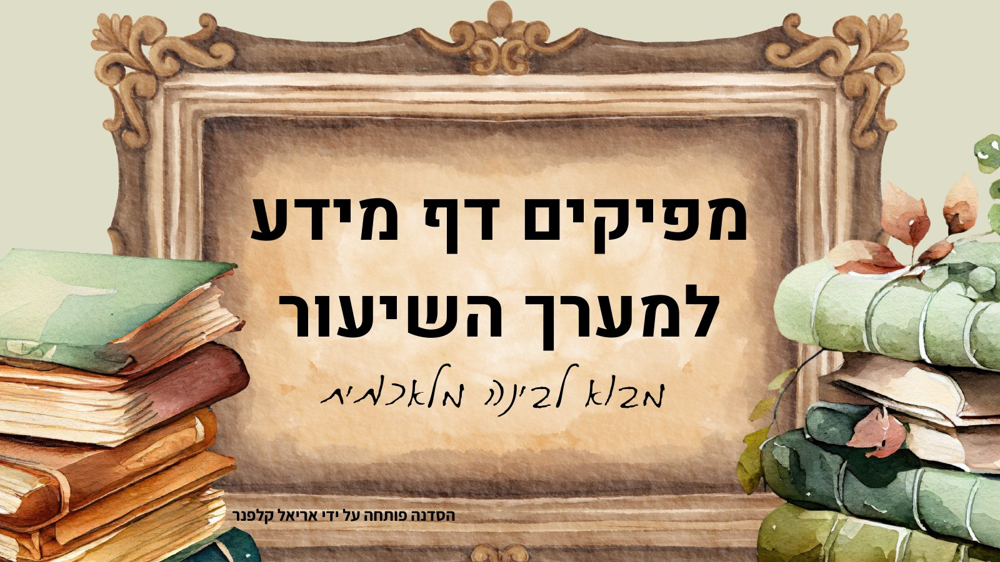
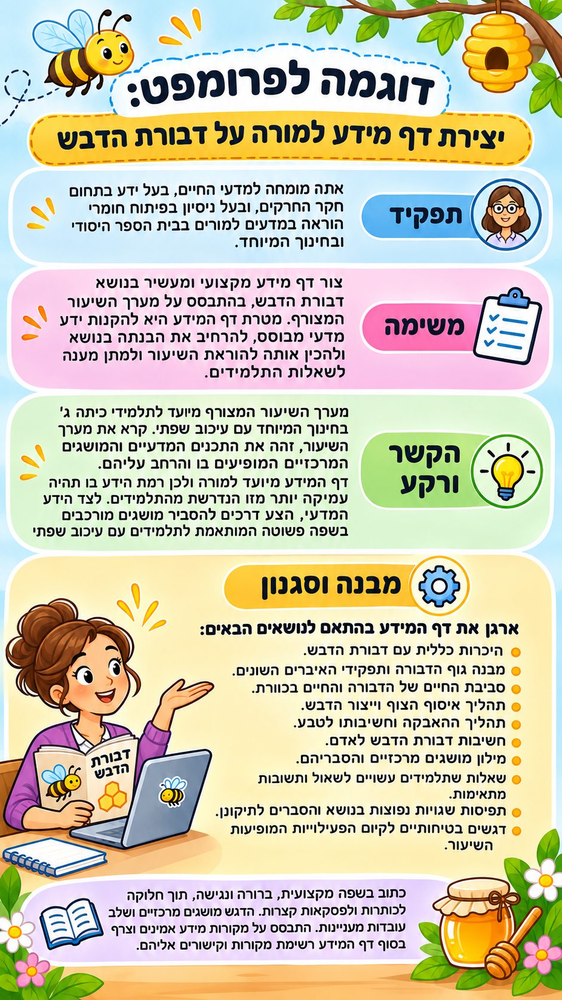
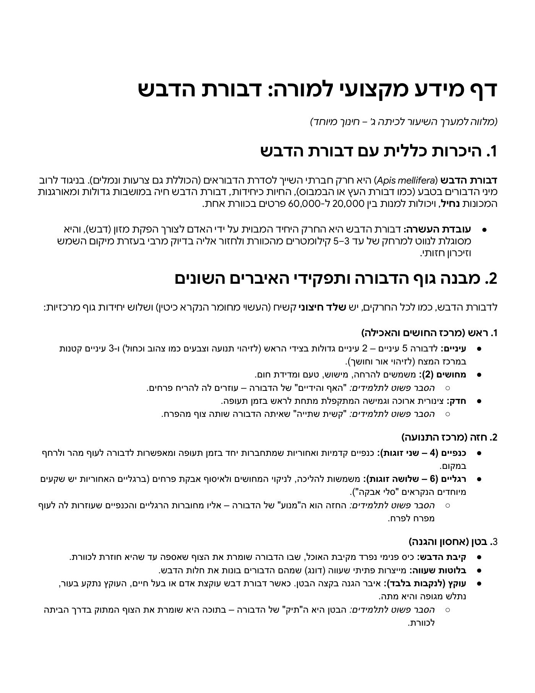
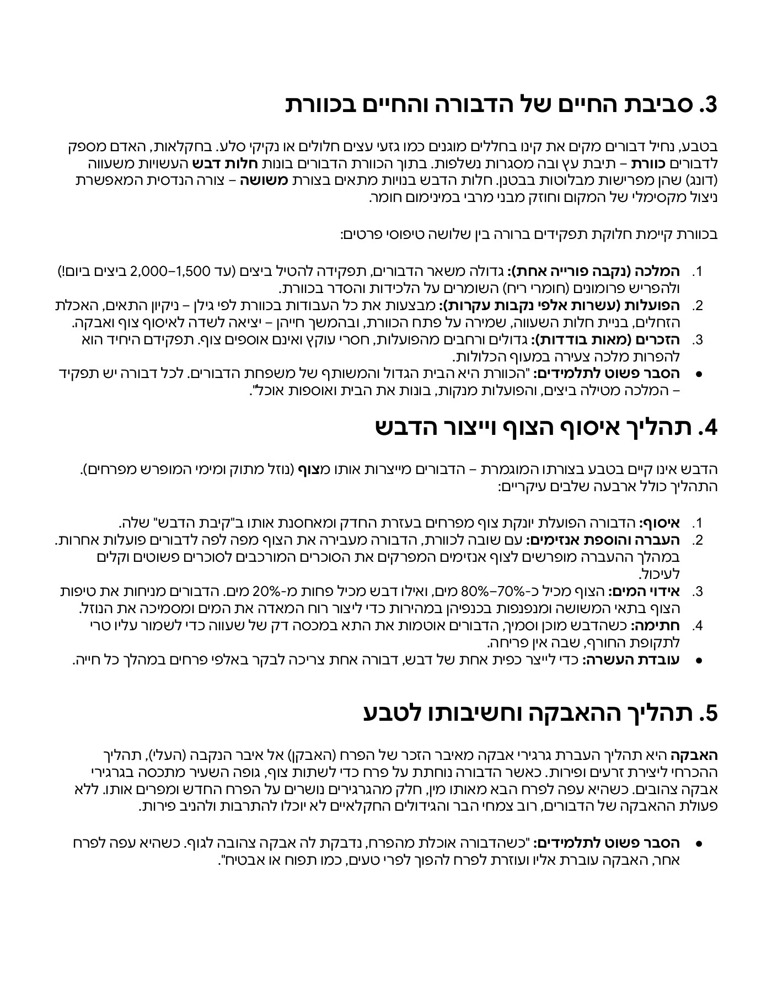
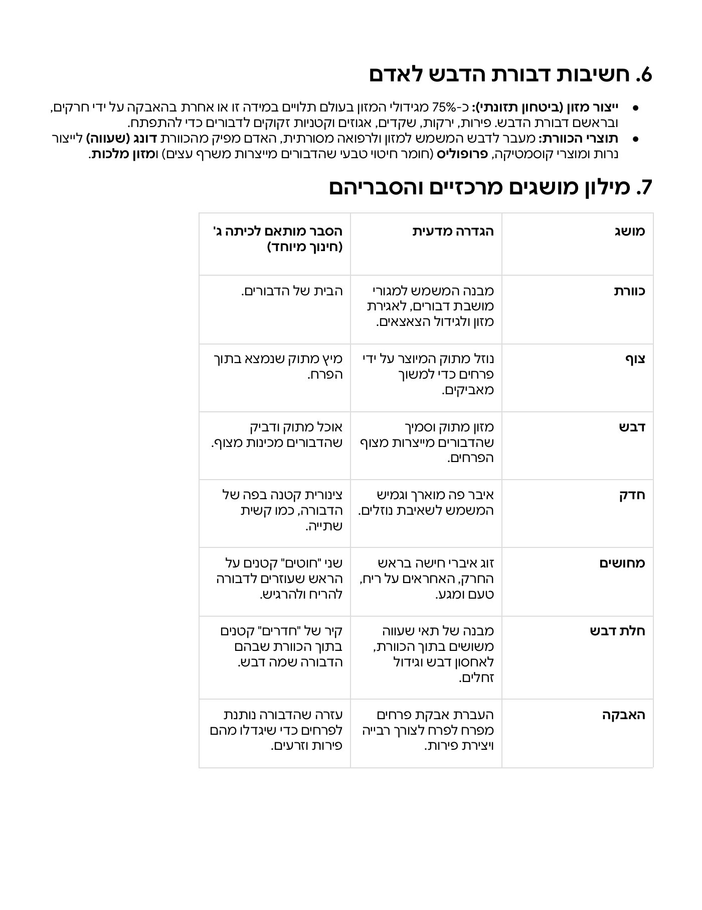
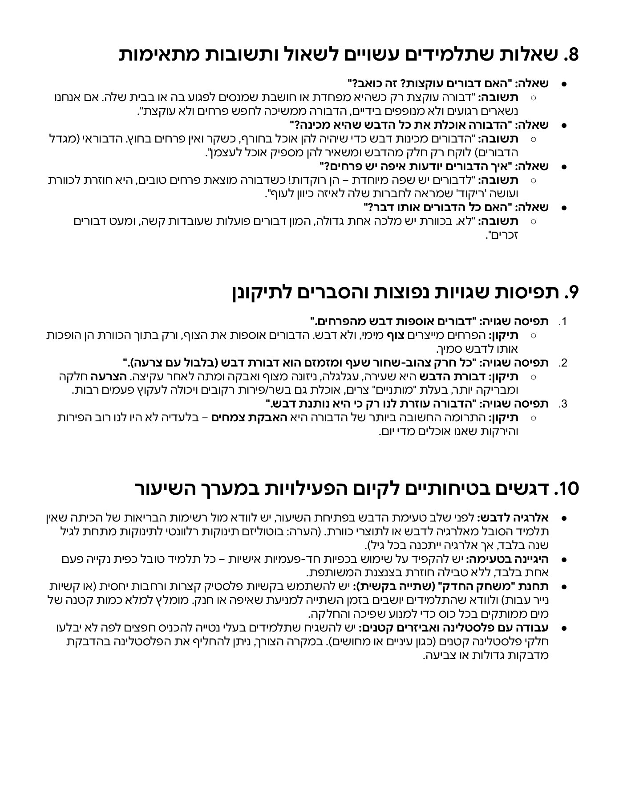
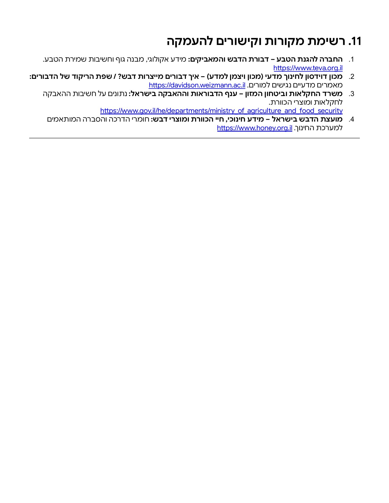

תפקיד
אתה מומחה למדעי החיים, בעל ידע בתחום חקר החרקים, ובעל ניסיון בפיתוח חומרי הוראה במדעים למורים בבית הספר היסודי ובחינוך המיוחד.
אחרי שיש מערך שיעור, המורה צריכה גם להכיר את הנושא לעומק. נכתוב פרומפט שמפיק דף מידע מקצועי על בסיס המערך.
עוברים בין השקפים בחצים או במקשי החצים במקלדת.

הפרומפט בנוי מארבעת המרכיבים, ומתבסס על מערך השיעור שיצרנו.

אפשר להעתיק אותו, להדביק בכלי הבינה ולשנות את הנושא והכיתה לפי הצורך.
אתה מומחה למדעי החיים, בעל ידע בתחום חקר החרקים, ובעל ניסיון בפיתוח חומרי הוראה במדעים למורים בבית הספר היסודי ובחינוך המיוחד.
צור דף מידע מקצועי ומעשיר בנושא דבורת הדבש, בהתבסס על מערך השיעור המצורף. מטרת דף המידע היא להקנות ידע מדעי מבוסס, להרחיב את הבנתה בנושא ולהכין אותה להוראת השיעור ולמתן מענה לשאלות התלמידים.
מערך השיעור המצורף מיועד לתלמידי כיתה ג׳ בחינוך המיוחד עם עיכוב שפתי. קרא את מערך השיעור, זהה את התכנים המדעיים והמושגים המרכזיים המופיעים בו והרחב עליהם. דף המידע מיועד למורה ולכן רמת הידע בו תהיה עמוקה יותר מזו הנדרשת מהתלמידים. לצד הידע המדעי, הצע דרכים להסביר מושגים מורכבים בשפה פשוטה המותאמת לתלמידים עם עיכוב שפתי.
ארגן את דף המידע בהתאם לנושאים הבאים:
כתוב בשפה מקצועית, ברורה ונגישה, תוך חלוקה לכותרות ופסקאות קצרות. הדגש מושגים מרכזיים ושלב עובדות מעניינות. התבסס על מקורות מידע אמינים וצרף בסוף דף המידע רשימת מקורות וקישורים אליהם.
כך נראה דף המידע שהתקבל מהפרומפט שלמעלה.





לקריאה נוחה יותר, או להדפסה, פתחו את ה-PDF.
לא שוכחים: דף מידע שנוצר בבינה מלאכותית עלול לכלול טעויות. לפני שמסתמכים עליו, בודקים את העובדות מול המקורות שברשימה שבסוף הדף.
נבנה בעזרת הבינה אתר לתלמידים ונפרסם אותו ב-Google Sites.